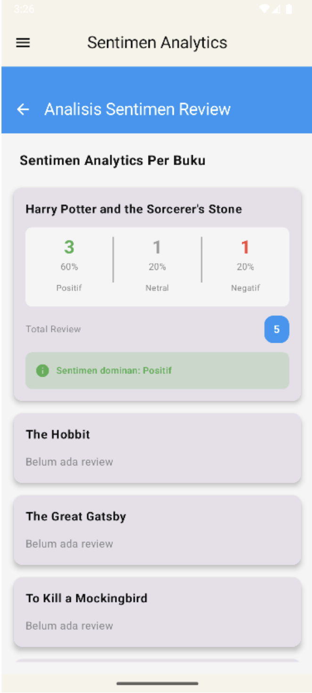
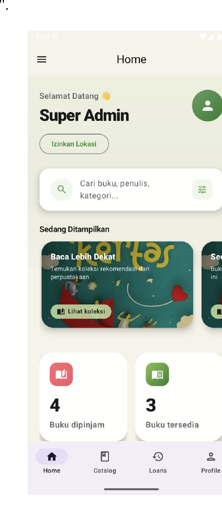
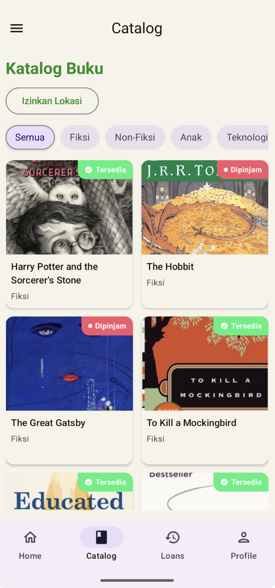
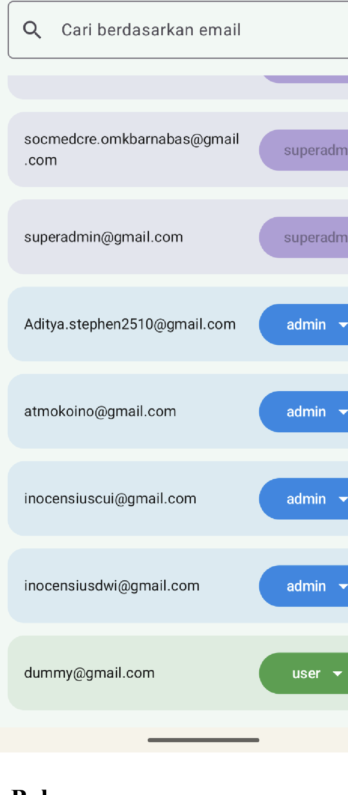
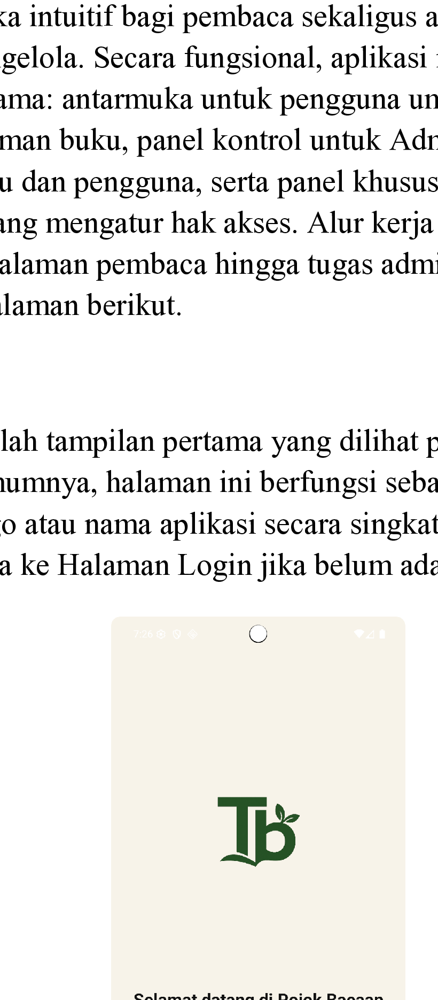

Digital Library with a Smart Heart
Pojok Baca (Taman Bacaan) is a comprehensive digital library application designed to modernize the reading experience. While it handles core library functions like book discovery, borrowing, and user management, its standout feature is a built-in sentiment analysis engine for book reviews.
Built with a modern Android stack, the app leverages Firebase for real-time data persistence and authentication, ensuring a seamless experience across devices. The goal was to create not just a repository for books, but a community-driven platform where readers can share and understand the collective sentiment of the library's catalog.
Comprehensive Library Management
Simplified UX allows users to borrow books instantly after authentication.
Automated reminders 3 days before due dates to ensure high return rates.
Admins can add new inventory instantly by scanning ISBN barcodes.
Tailored interfaces for Users, Admins, and Super Admins.
Real-Time Sentiment Analysis
I engineered a custom keyword-based sentiment classification engine that runs entirely on-device. As users type their reviews, the system provides instantaneous feedback, categorizing their sentiment as Positive, Neutral, or Negative with a calculated confidence score.

Latency under 10ms for immediate UI response.
Firestore integration for persistent, global sentiment stats.
Declarative UI components for dynamic sentiment badges.
Modular design ready for TensorFlow Lite custom models.
App Screenshots




My Role & Contribution
As the Lead Software Engineer and ML Architect, I spearheaded the core technical architecture of the Pojok Baca application. My primary contribution was the end-to-end design and deployment of the on-device Sentiment Analysis Engine using TensorFlow Lite, as well as engineering the complex real-time data synchronization between our Jetpack Compose frontend and Firestore backend.
I was responsible for architecting the robust state management systems, writing advanced Firestore security rules, and optimizing the application for scale. By taking ownership of the most technically challenging and critical components, I ensured that the machine learning features operated seamlessly within a highly responsive, production-ready environment.
Group Members
- TensorFlow Lite Sentiment Engine
- Advanced State Management
- Database Architecture & Security Rules
- UI and UX
- Navigation Setup
- Asset Management
- Authentication Setup
- CRUD Operations
- Data Seeding
- Manual Testing
- User Flow Validation
- Project Documentation